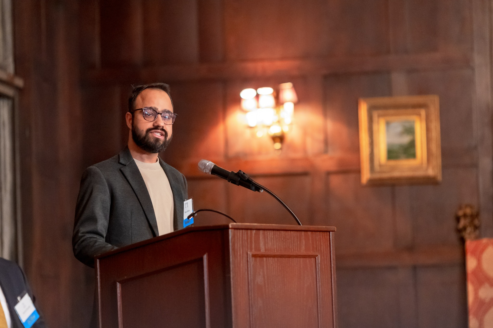

How do economies develop?
How should we measure whether development is actually improving people's lives?
I work at the intersection of economics, data and public policy, using empirical research and quantitative evidence to understand questions of development, health, migration and the changing economics of technology.

I am an economist and researcher with a Master's degree in International Economics and Finance from Johns Hopkins University's School of Advanced International Studies (SAIS), where I focused on development economics, impact evaluation and quantitative research.
I currently work with World Bank Economist Limon Bade Rodriguez on multiple research projects, including work related to labour migration, skills and employment. My work involves analysing survey and administrative data, applying quantitative methods and translating empirical evidence into insights on economic and policy questions.
Previously, I worked at the Indian Institute of Management Ahmedabad, where I conducted research in economics and co-authored research published in The Journal of Development Studies.
Beyond research, I have a strong interest in communication, intellectual community-building and program development. As a Head Fellow at the International Student House in Washington, DC, I organized international dialogues and cultural and policy events and founded the Waldo Stevenson Forum.
How should we measure whether development is actually improving people's lives?
How do access and social inequalities influence health and development outcomes?
How do migration, skills and labour mobility affect workers and economies?
How will AI affect labour markets, productivity, inequality and development—and how can AI improve research?